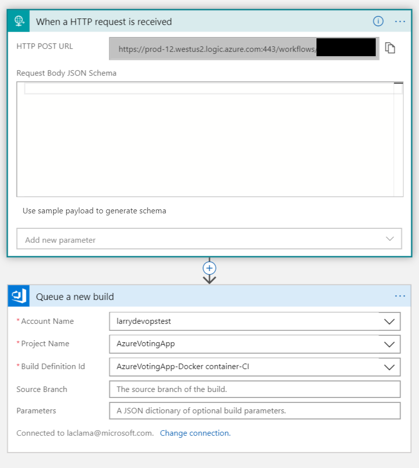

Trigger Azure DevOps Build pipeline from Docker image update
This is the first in a series of posts about automating Docker image builds.
How to trigger a build?
I was recently asked how to trigger a classic (gui) Azure DevOps build pipeline when a Docker base image updates. You might want to do this, for example, if your build pipeline includes unit, functional, or security tests.
My immediate answer was “you can’t.” However, after a little investigation and a little hacking, I was able to prototype a solution using the automated trigger & build feature of Azure Container Registry (ACR). The hint for how to do this was buried in the Q&A on documentation page, where it’s suggested to use a dummy image to trigger the AzDo pipeline. Here’s a walkthrough of how I did this:
Sample Repo & Pipeline
As a sample repo, I used the canonical Azure voting app, but I simplified it a bit to suit my needs. My Dockerfile is pretty simple; my goal is for the build pipeline to run whenever the base python:3.6-slim image is updated on Dockerhub.
FROM python:3.6-slim
RUN pip install redis
RUN pip install flask
ADD /azure-vote /app
CMD [ "python", "/app/main.py" ]
Step 1: Create a dummy base image and task in ACR
As I mentioned above, I’m going to build a dummy base image using ACR, and then use a webhook when this image updates to trigger my Azure DevOps pipeline.
First, I’ll need to follow the instructions here to create a dummy base image and a task to update it when its reference base updates on Dockerhub.
To start, build the base image in ACR:
ACR_NAME=larrymsvoting
REPO="https://larrydevopstest@dev.azure.com/larrydevopstest/AzureVotingApp/_git/AzureVotingApp"
DOCKER_FILE="azure-vote/Dockerfile-pythonbase"
az acr build --registry $ACR_NAME -t baseimages/python-3.6-slim-base \
--file $DOCKER_FILE $REPO
Step 2: Create a task
az acr task create \
--registry $ACR_NAME \
--name taskpythonbase \
-t baseimages/python-3.6-slim-base:{{.Run.ID}} \
--arg REGISTRY_NAME=$ACR_NAME.azurecr.io \
--context $REPO \
--file Dockerfile-pythonbase \
--commit-trigger-enabled false \
-o table
Assuming it runs successfully, you’ll see output like:
NAME PLATFORM STATUS SOURCE REPOSITORY TRIGGERS
-------------- ---------- -------- ---------------------------------------------------------------------------------------- ----------
taskpythonbase linux Enabled https://larrydevopstest@dev.azure.com/larrydevopstest/AzureVotingApp/_git/AzureVotingApp BASE_IMAGE
Step 3: Logic App
Now comes the fun part: getting the base image update to trigger a build in Azure DevOps. We’ll start by creating a logic app. In the portal, create a logic app and give it a relevant name, eg ‘pythonbasetrigger’. In the Logic Apps Designer pane, use “When an HTTP Request is Received” as the trigger.
Add a new step, then type ‘Azure DevOps’ in the search field, then choose ‘Queue a new build’ as the action. After authenticating, choose the account name, project name, and build id (eg, pipleline). Once it’s saved, it should like like: 
You can test the logic app by pressing ‘Run’, which should kick off an Azure DevOps pipeline build.
Finally, in your logic apps’s first step ‘When an HTTP request is received’, find the post URL and copy it, as it will be needed for the next step.
Step 4: ACR webhook
Next, we’ll create an ACR webhook which fires whenever the base image updates.
URI=<webhook post url from prior step>
az acr webhook create -n pythonbasehook -r $ACR_NAME \
--scope baseimages/python-3.6-slim-base \
--actions push --uri $URI
Step 5: Enjoy!
We’ve done it! We now have a set up a set of integrations that does the following:

Step 6: Test
Since the Dockerhub base image is only going to be updated periodically, you can test your integration by manually running a build in ACR:
az acr build --registry $ACR_NAME -t baseimages/python-3.6-slim-base \
--file $DOCKER_FILE $REPO
If all is working, this should trigger a build in Azure DevOps.
Final Thoughts
An alternative to using a webhook would be to use an Event Grid to trigger the Logic App. This is slightly more work to set up, but it might better if you have a number of different pipelines that want to receive notifications when a base image updates. With a webhook, you’d need to set up a trigger for each and every one of them. Eventgrid, having a pubsub architecture, would fan-out one:many more effectively than webhooks.